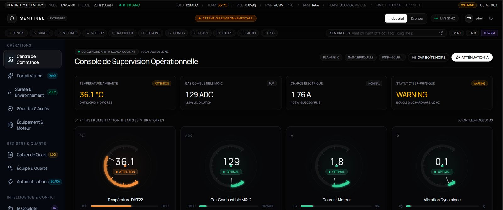
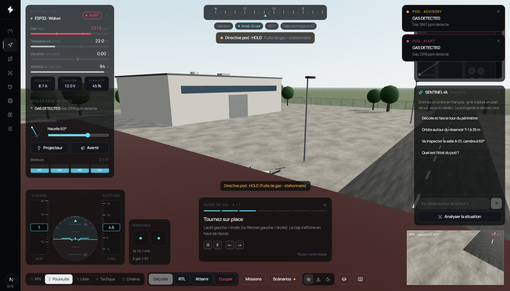
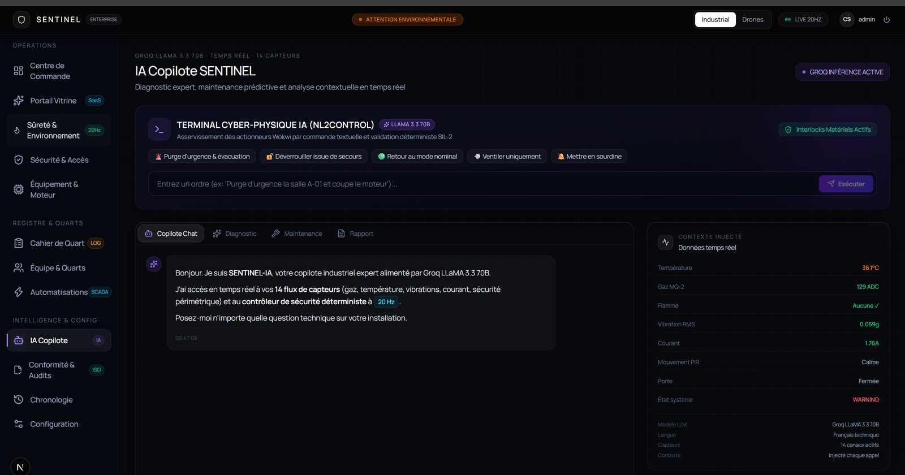
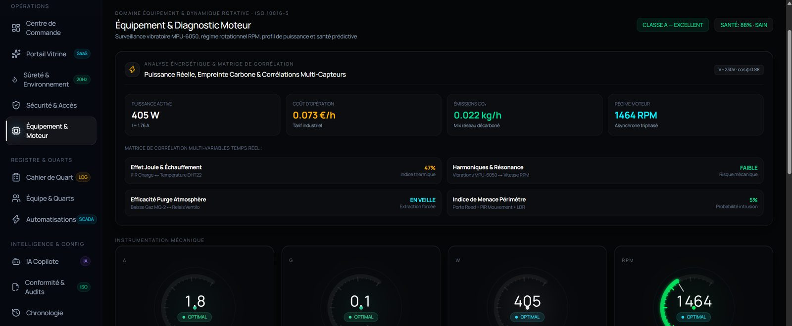
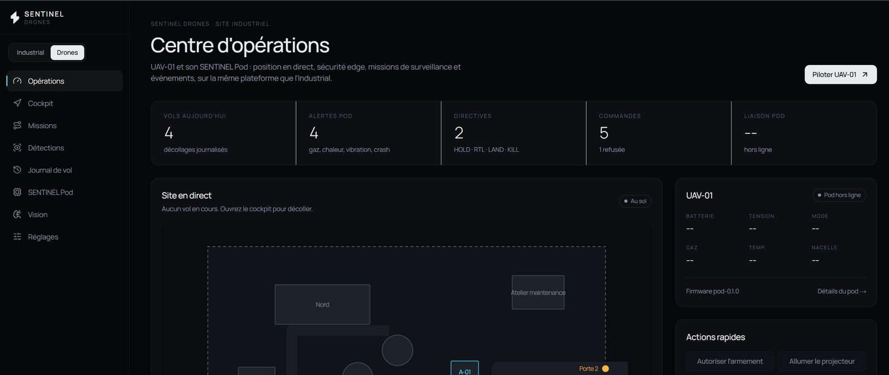
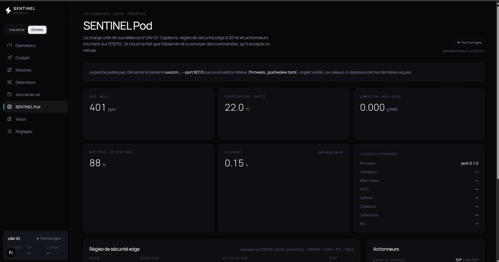
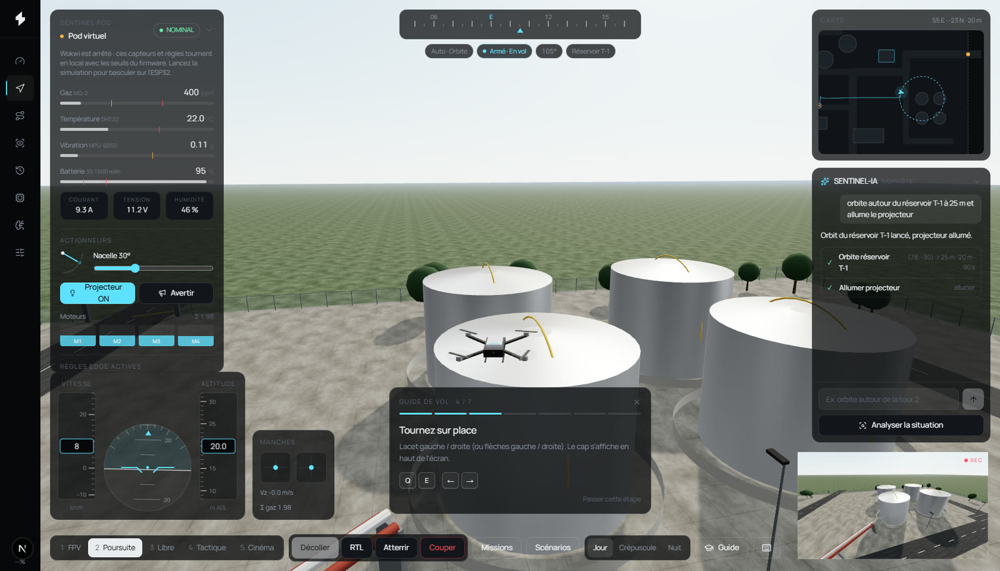
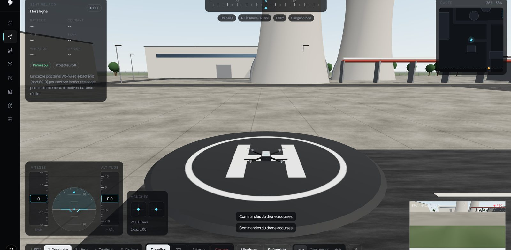
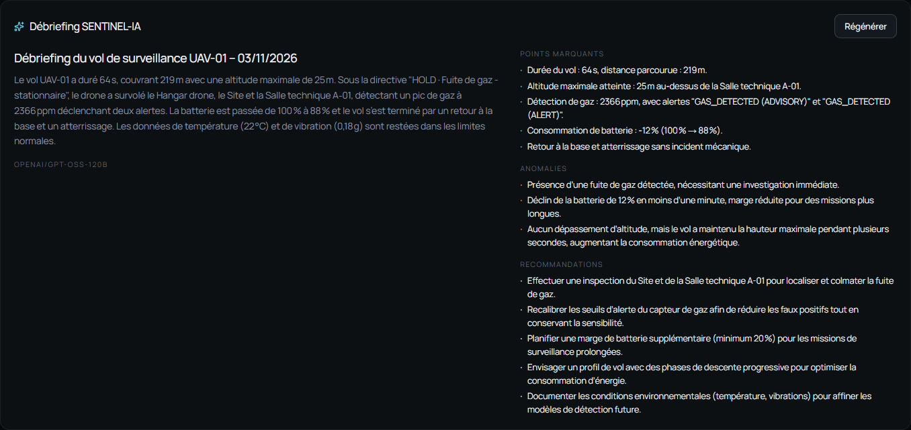
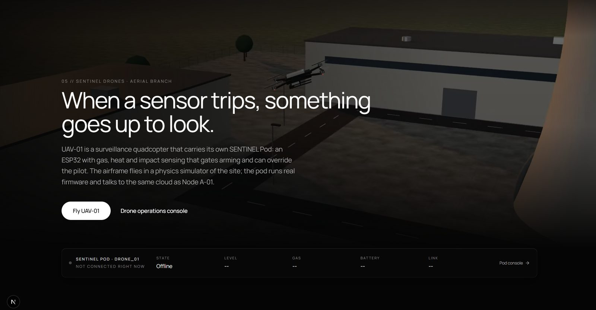

IoT & AI · industrial safety · built end to end
SENTINEL
An industrial safety platform. Two ESP32 devices make the safety decisions at the edge, and an LLM layer explains what they see and proposes actions. A human approves every action, and the device can still refuse it.
- C++
- FreeRTOS
- ESP32
- PlatformIO
- Wokwi
- Firebase
- FastAPI
- SQLite
- Groq
- Next.js
- React
- three.js
- TypeScript
- pytest
- Playwright
Two branches, one backend
A plant room and a flying sensor pod
SENTINEL Industrial
Node A-01, an ESP32 watching a plant room: gas, flame, temperature, door, motion, RFID, motor current, power, RPM, vibration and tank level. It drives a fan relay, a buzzer, a door lock and an RGB andon tower.
SENTINEL Drones
An inspection drone carrying an ESP32 pod that reads gas, temperature, humidity, vibration and battery, and steers a gimbal, a searchlight, a buzzer and a nav ring. It flies in a 3D simulation of the same plant.

The operator view
The directive comes with its reason

PodSafety, run at 20 Hz
Each rule has a set point and a clear point
| Rule | Trigger | Clears at | Pod response |
|---|---|---|---|
| KILL button | Pressed | Manual | KILL: motors off, permit revoked |
| Crash | Peak > 2.5 g while airborne | Operator acknowledgement | DISARM, crash latched |
| Critical battery | < 15% in flight | > 20% | LAND |
| Low battery | < 30% in flight | > 35% | RTL: return home |
| Gas leak | ≥ 2000 ppm in flight (advisory from 1000) | < 800 ppm | HOLD: stop and hover |
| Heat | ≥ 45 °C, or +8 °C within 10 s | Below 43 °C and half the rise | Alert |
| Vibration | > 0.6 g RMS for 3 s | < 0.5 g | Advisory |
| Flight link lost | No flight update for 3 s airborne | Updates resume | Advisory |
| Unused permit | 120 s without takeoff | New permit | Permit revoked |
When rules fire together the strongest wins: KILL > DISARM > LAND > RTL > HOLD. The directive carries a reason string that the cockpit shows, the flight log stores and the LLM debrief cites.
Gallery
Both branches, screen by screen

AI copilot
Motor diagnostics
Drone operations
Pod console
Copilot flight plan
Ready on the pad
Flight debrief
Drones landingEngineering details
Safety as a handshake
Hold ARM for 1 s or send ARM_PERMIT; the pod checks itself first and refuses if airborne, KILL pressed, a crash unacknowledged, battery under 40% or gas at alert level, and says why.
Every command has an id and an ACK or NACK, so the operator sees whether the device actually obeyed.
The pot sets cell voltage and coulomb counting runs on top: 1.5 Ah, 0.15 A idle, 0.4 A + 4.5 A × throttle when armed, so a climb drains faster than a hover.
Wokwi’s ESP32 cannot finish TLS to Firebase, so the pod POSTs a JSON frame every 500 ms to an HTTP gateway that relays it and returns pending commands.
When the ESP32 is offline, the cockpit runs a TypeScript port of PodSafety with the same thresholds, labelled “Pod virtuel”, and never writes to the database.
C++ on FreeRTOS (PlatformIO, Wokwi), Firebase RTDB, FastAPI with SQLite, Groq LLMs, Next.js 16, React 19, three.js via React Three Fiber, pytest and Playwright.
A deliberate choice
Why rules and not ML at the edge
These are safety interlocks. They must be explainable, testable at the boundary and identical every time. A threshold with hysteresis can be proven against a contract test; a learned model on a microcontroller would add risk without adding information. ML belongs where the signal is rich (vision, spectra), not on a gas threshold.
What is real today: firmware, safety rules, telemetry, backend, LLM features and the 3D cockpit, tested on the ESP32 in the Wokwi simulator. The computer-vision detector is designed and its data channel wired, but the model is not trained yet.